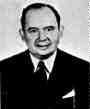

John von Neumann was born János von Neumann. He was called Jancsi as a child, a diminutive form of János, then later he was called Johnny in the United States. His father, Max Neumann, was a top banker and he was brought up in a extended family setting in Budapest where as a child he learnt languages from the German and French governesses that were employed. Although the family were Jewish, Max Neumann did not observe the strict practices of that religion and the household seemed to mix Jewish and Christian traditions.
It is also worth explaining how Max Neumann's son acquired the "von" to become János von Neumann. In 1913 Max Neumann purchased a title but did not change his name. His son, however, used the German form von Neumann where the "von" indicated the title.
As a child von Neumann showed he had an incredible memory. Poundstone, writes:-
At the age of six, he was able to exchange jokes with his father in classical Greek. The Neumann family sometimes entertained guests with demonstrations of Johnny's ability to memorise phone books. A guest would select a page and column of the phone book at random. Young Johnny read the column over a few times, then handed the book back to the guest. He could answer any question put to him (who has number such and such?) or recite names, addresses, and numbers in order.In 1911 von Neumann entered the Lutheran Gymnasium. The school had a strong academic tradition which seemed to count for more than the religious affiliation both in the Neumann's eyes and in those of the school. His mathematics teacher quickly recognised von Neumann's genius and special tuition was put on for him. The school had another outstanding mathematician one year ahead of von Neumann, namely Eugene Wigner.
World War I had relatively little effect on von Neumann's education but after the war ended Béla Kun controlled Hungary for five months in 1919 with a Communist government. The Neumann family fled to Austria as the affluent came under attack. However, after a month, they returned to face the problems of Budapest. When Kun's government failed, the fact that it had been largely composed of Jews meant that Jewish people were blamed. Such situations are devoid of logic and the fact that the Neumann's were opposed to Kun's government did not save them from persecution.
In 1921 von Neumann completed his education at the Lutheran Gymnasium. His first mathematics paper written jointly with Fekete, the assistant at the University of Budapest who had been tutoring him, was published in 1922. However Max Neumann did not want his son to take up a subject that would not bring him wealth. Max Neumann asked Theodore von Kármán to speak to his son and persuade him to follow a career in business. Perhaps von Kármán was the wrong person to ask to undertake such a task but in the end all agreed on the compromise subject of chemistry for von Neumann's university studies.
Hungary was not an easy country for those of Jewish descent for many reasons and there was a strict limit on the number of Jewish students who could enter the University of Budapest. Of course, even with a strict quota, von Neumann's record easily won him a place to study mathematics in 1921 but he did not attend lectures. Instead he also entered the University of Berlin in 1921 to study chemistry.
Von Neumann studied chemistry at the University of Berlin until 1923 when he went to Zurich. He achieved outstanding results in the mathematics examinations at the University of Budapest despite not attending any courses. Von Neumann received his diploma in chemical engineering from the Technische Hochschule in Zürich in 1926. While in Zurich he continued his interest in mathematics, despite studying chemistry, and interacted with Weyl and Pólya who were both at Zurich. He even took over one of Weyl's courses when he was absent from Zurich for a time. Pólya said :-
Johnny was the only student I was ever afraid of. If in the course of a lecture I stated an unsolved problem, the chances were he'd come to me as soon as the lecture was over, with the complete solution in a few scribbles on a slip of paper.Von Neumann received his doctorate in mathematics from the University of Budapest, also in 1926, with a thesis on set theory. He published a definition of ordinal numbers when he was 20, the definition is the one used today.
Von Neumann lectured at Berlin from 1926 to 1929 and at Hamburg from 1929 to 1930. However he also held a Rockefeller fellowship to enable him to undertake postdoctoral studies at the University of Göttingen. He studied under Hilbert at Göttingen during 1926-27. By this time von Neumann had achieved celebrity status :-
By his mid-twenties, von Neumann's fame had spread worldwide in the mathematical community. At academic conferences, he would find himself pointed out as a young genius.Veblen invited von Neumann to Princeton to lecture on quantum theory in 1929. Replying to Veblen that he would come after attending to some personal matters, von Neumann went to Budapest where he married his fiancée Marietta Kovesi before setting out for the United States. In 1930 von Neumann became a visiting lecturer at Princeton University, being appointed professor there in 1931.
Between 1930 and 1933 von Neumann taught at Princeton but this was not one of his strong points :-
His fluid line of thought was difficult for those less gifted to follow. He was notorious for dashing out equations on a small portion of the available blackboard and erasing expressions before students could copy them.He became one of the original six mathematics professors (J W Alexander, A Einstein, M Morse, O Veblen, J von Neumann and H Weyl) in 1933 at the newly founded Institute for Advanced Study in Princeton, a position he kept for the remainder of his life.
During the first years that he was in the United States, von Neumann continued to return to Europe during the summers. Until 1933 he still held academic posts in Germany but resigned these when the Nazis came to power. Unlike many others, von Neumann was not a political refugee but rather he went to the United States mainly because he thought that the prospect of academic positions there was better than in Germany.
In 1933 von Neumann became co-editor of the Annals of Mathematics and, two years later, he became co-editor of Compositio Mathematica. He held both these editorships until his death.
Ulam summarises von Neumann's work as:
In his youthful work, he was concerned not only with mathematical logic and the axiomatics of set theory, but, simultaneously, with the substance of set theory itself, obtaining interesting results in measure theory and the theory of real variables. It was in this period also that he began his classical work on quantum theory, the mathematical foundation of the theory of measurement in quantum theory and the new statistical mechanics.His text Mathematische Grundlagen der Quantenmechanik (1932) built a solid framework for the new quantum mechanics. Van Hove writes :-
Quantum mechanics was very fortunate indeed to attract, in the very first years after its discovery in 1925, the interest of a mathematical genius of von Neumann's stature. As a result, the mathematical framework of the theory was developed and the formal aspects of its entirely novel rules of interpretation were analysed by one single man in two years (1927-1929).Self-adjoint algebras of bounded linear operators on a Hilbert space, closed in the weak operator topology, were introduced in 1929 by von Neumann in a paper in Mathematische Annalen. Kadison explains :-
His interest in ergodic theory, group representations and quantum mechanics contributed significantly to von Neumann's realisation that a theory of operator algebras was the next important stage in the development of this area of mathematics.Such operator algebras were called "rings of operators" by von Neumann and later they were called W*-algebras by some other mathematicians. J Dixmier, in 1957, called them "von Neumann algebras" in his monograph Algebras of operators in Hilbert space (von Neumann algebras). In the second half of the 1930's and the early 1940s von Neumann, working with his collaborator F J Murray, laid the foundations for the study of von Neumann algebras in a fundamental series of papers.
Ulam explains how von Neumann was led towards game theory:-
Von Neumann's awareness of results obtained by other mathematicians and the inherent possibilities which they offer is astonishing. Early in his work, a paper by Borel on the minimax property led him to develop ... ideas which culminated later in one of his most original creations, the theory of games.In game theory von Neumann proved the minimax theorem. He gradually expanded his work in game theory, and with co-author Oskar Morgenstern, he wrote the classic text Theory of Games and Economic Behaviour (1944).
Ulam continues :-
An idea of Koopman on the possibilities of treating problems of classical mechanics by means of operators on a function space stimulated him to give the first mathematically rigorous proof of an ergodic theorem. Haar's construction of measure in groups provided the inspiration for his wonderful partial solution of Hilbert's fifth problem, in which he proved the possibility of introducing analytical parameters in compact groups.In 1938 the American Mathematical Society awarded the Bôcher Prize to John von Neumann for his memoir Almost periodic functions and groups. This was published in two parts in the Transactions of the American Mathematical Society, the first part in 1934 and the second part in the following year. Around this time von Neumann turned to applied mathematics :-
In the middle 30's, Johnny was fascinated by the problem of hydrodynamical turbulence. It was then that he became aware of the mysteries underlying the subject of non-linear partial differential equations. His work, from the beginnings of the Second World War, concerns a study of the equations of hydrodynamics and the theory of shocks. The phenomena described by these non-linear equations are baffling analytically and defy even qualitative insight by present methods. Numerical work seemed to him the most promising way to obtain a feeling for the behaviour of such systems. This impelled him to study new possibilities of computation on electronic machines ...Von Neumann was one of the pioneers of computer science making significant contributions to the development of logical design. Shannon writes :-
Von Neumann spent a considerable part of the last few years of his life working in [automata theory]. It represented for him a synthesis of his early interest in logic and proof theory and his later work, during World War II and after, on large scale electronic computers. Involving a mixture of pure and applied mathematics as well as other sciences, automata theory was an ideal field for von Neumann's wide-ranging intellect. He brought to it many new insights and opened up at least two new directions of research.He advanced the theory of cellular automata, advocated the adoption of the bit as a measurement of computer memory, and solved problems in obtaining reliable answers from unreliable computer components.
During and after World War II, von Neumann served as a consultant to the armed forces. His valuable contributions included a proposal of the implosion method for bringing nuclear fuel to explosion and his participation in the development of the hydrogen bomb. From 1940 he was a member of the Scientific Advisory Committee at the Ballistic Research Laboratories at the Aberdeen Proving Ground in Maryland. He was a member of the Navy Bureau of Ordnance from 1941 to 1955, and a consultant to the Los Alamos Scientific Laboratory from 1943 to 1955. From 1950 to 1955 he was a member of the Armed Forces Special Weapons Project in Washington, D.C. In 1955 President Eisenhower appointed him to the Atomic Energy Commission, and in 1956 he received its Enrico Fermi Award, knowing that he was incurably ill with cancer.
Eugene Wigner wrote of von Neumann's death :-
When von Neumann realised he was incurably ill, his logic forced him to realise that he would cease to exist, and hence cease to have thoughts ... It was heartbreaking to watch the frustration of his mind, when all hope was gone, in its struggle with the fate which appeared to him unavoidable but unacceptable.In a diffrent source von Neumann's death is described in these terms:-
... his mind, the amulet on which he had always been able to rely, was becoming less dependable. Then came complete psychological breakdown; panic, screams of uncontrollable terror every night. His friend Edward Teller said, "I think that von Neumann suffered more when his mind would no longer function, than I have ever seen any human being suffer."It would be almost impossible to give even an idea of the range of honours which were given to von Neumann. He was Colloquium Lecturer of the American Mathematical Society in 1937 and received the its Bôcher Prize as mentioned above. He held the Gibbs Lectureship of the American Mathematical Society in 1947 and was President of the Society in 1951-53.Von Neumann's sense of invulnerability, or simply the desire to live, was struggling with unalterable facts. He seemed to have a great fear of death until the last... No achievements and no amount of influence could save him now, as they always had in the past. Johnny von Neumann, who knew how to live so fully, did not know how to die.
He was elected to many academies including the Academia Nacional de Ciencias Exactas (Lima, Peru), Academia Nazionale dei Lincei (Rome, Italy), American Academy of Arts and Sciences (USA), American Philosophical Society (USA), Instituto Lombardo di Scienze e Lettere (Milan, Italy), National Academy of Sciences (USA) and Royal Netherlands Academy of Sciences and Letters (Amsterdam, The Netherlands).
Von Neumann received two Presidential Awards, the Medal for Merit in
1947 and the Medal for Freedom in 1956. Also in 1956 he received the Albert
Einstein Commemorative Award and the Enrico Fermi Award mentioned above.
John von Neumann was the President of the American Mathematical Society in 1951 - 1952.
He was the American Mathematical Society Colloquium Lecturer in 1937. He was the Bocher Prize winner in 1938.
There is a Crater Von Neumann on the moon.
The URL of this page is:
http://www.math.uri.edu/historyofmath